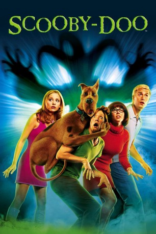
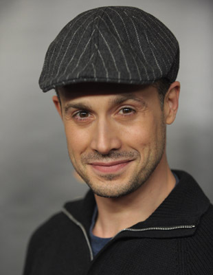
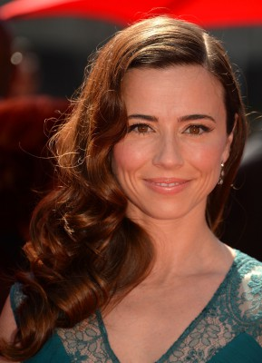
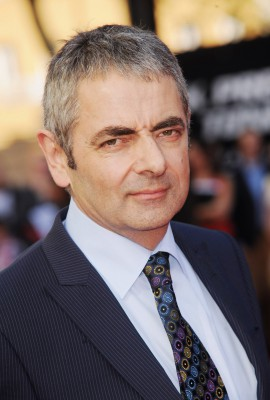
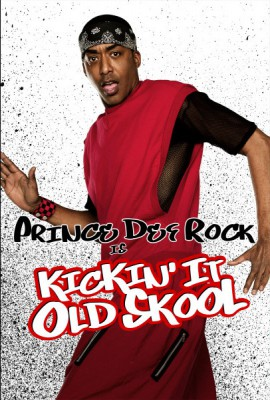
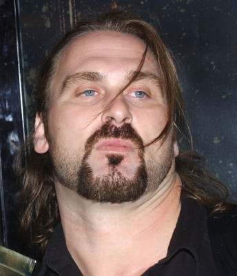

#2469 Scooby-Doo
 
 IMDB-Wertung: 5.0 / 10
IMDB-Wertung: 5.0 / 10  Metascore: 35
Metascore: 35 
Emile Mondavarious ist Besitzer eines Vergn��gungsparks auf Spooky Island. Da einige Gäste sich in Zombies verwandeln, beauftragt er Mitarbeiter von Mystery, Inc mit der Lösung des Problems.Ein Voodoo-Priester rät Daphne ab, das auf der Insel befindliche Schloss aufzusuchen, doch sie und ihre Freunde tun es trotzdem. Scooby wird dort von einem Dämon angegriffen.Den Freunden werden ihre Seelen geraubt, aber Shaggy findet den Ort, wo die Seelen aufbewahrt werden. Er befreit die Seelen seiner Freunde, die zuerst in die falschen Körper zurückkehren. Eine magische Pyramide bewirkt den Seelentausch bis die Seelen in die richtigen Körper zurückkehren.Scooby-Doo soll von Mondavarious einer dunklen Gottheit geopfert werden. Er betrachtet die Rolle der Opfergabe zuerst als schmeichelhaft. Shaggy und seine Freunde retten ihn.
Jahr: 2002
Dauer: 86 Minuten
FSK: 6
Land: USA Studio: Warner Bros.Tonspuren:
Untertitel:
Auflösung: 1080p (1920x1080) Größe: 6717 MB
Genre: Abenteuer, Komödie, Mystery
Regisseur:  Raja Gosnell
Raja Gosnell
Drehbuch: James Gunn, Craig Titley, James Gunn, William Hanna, Joseph Barbera
Soundtrack: David Newman
Darsteller:
-  Freddie Prinze Jr. als Fred
 Sarah Michelle Gellar als Daphne
Sarah Michelle Gellar als Daphne Matthew Lillard als Shaggy
Matthew Lillard als Shaggy-  Linda Cardellini als Velma
-  Rowan Atkinson als Mondavarious
 Isla Fisher als Mary Jane
Isla Fisher als Mary Jane-  Miguel A. Núñez Jr. als Voodoo Maestro
- Steven Grives als N' Goo Tuana
 Mark McGrath als Sugar Ray
Mark McGrath als Sugar Ray- Charlie Cousins als Velma's Friend
- Kristian Schmid als Brad
- Nicholas Hope als Old Man Smithers
- Neil Fanning als Scooby
- Scott Innes als Scrappy
 J.P. Manoux als Scrappy Rex
J.P. Manoux als Scrappy Rex- Michala Banas als Carol
- Holly Brisley als Training Video Woman
- Bradley Gosnell als Airport Family
- Janis McGavin als Co-Ed Hottie
- Kym Jackson als Autograph Seeker
-  Andrew Bryniarski als Cavern Henchman
- Craig Behenna als Henchman #1
 Jess Harnell als Creatures
Jess Harnell als Creatures Frank Welker als Creatures
Frank Welker als Creatures- Mark Hodge als Dancer
- Pamela Anderson als Pamela Anderson
- Summer Fisher als Possessed Student , uncredited
 Sandra McCoy als Waitress , uncredited
Sandra McCoy als Waitress , uncredited- Charles Stan Frazier als Sugar Ray
- Craig Bullock als Sugar Ray
- Matthew Murphy Karges als Sugar Ray
- Rodney Sheppard als Sugar Ray
- Sam Greco als Zarkos
- Chris Cruickshanks als Tiny Henchman
- Alex Ruiz als Reporter #1
- Sheryl Benko als Reporter #2
- Rio Nugara als Island Emissary
- David Vallon als Bartender Dead Mike's
- Troy MacKinder als Guy in the Vat
- Robert Díaz als Training Video Guy #1
- Remi Broadway als Training Video Guy #2
- Martin Broome als Melvin Doo
- Simone Dumbleton als Co-Ed
- Jonathan Coffey als Fitzgibbon
- Michael Caffrey als Coast Guard #2
- Kyas Sherriff als Airport Attendant
- Celeste Gosnell als Airport Family
- Cayley Gosnell als Airport Family
- Audrey Gosnell als Airport Family
- Kurt Duval als Spooky Hotel Bartender
Datei: X:\Kinder Collections\Scooby-Doo\Scooby-Doo (2002, FSK6, 1920x1080).mkv seit 12.11.2015
Festplatte: Kinder-Filme+Trick
 Es gibt insgesamt 17 Filme in der Gruppe 'Kinder Collections\Scooby-Doo'
Es gibt insgesamt 17 Filme in der Gruppe 'Kinder Collections\Scooby-Doo'